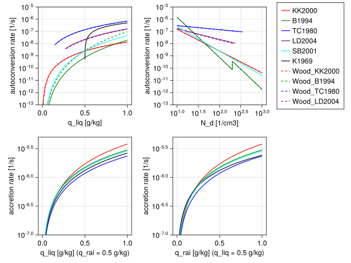

Microphysics 2M
The Microphysics2M.jl module provides 2-moment warm rain bulk parameterization of cloud microphysical processes including autoconversion, accretion, cloud self-collection and rain self-collection. Autoconversion defines the rate of transfer from cloud liquid water to rain water due to collisions between cloud droplets. Accretion defines the rate of transfer from cloud liquid water to rain water due to collisions between cloud droplets and rain drops. Cloud self-collection defines the rate of change of cloud droplets number density due to collisions between cloud droplets, and similarly, rain self-collection defines the rate of change of raindrops number density due to collsions between raindrops. Specifically, Microphysics2M.jl implements:
- the double-moment Axel Seifert, Klaus D Beheng (2001) parametrization, which includes autoconversion, accretion, cloud and rain self-collection rates;
- and other double-moment autoconversion and accretions schemes from R. Wood (2005) based on the works of M. Khairoutdinov, Y. Kogan (2000), K.D. Beheng (1994), G.J. Tripoli, W.R. Cotton (1980) and Y. Liu, P.H. Daum (2004).
The microphysics variables are expressed as specific humidities [kg/kg] and number densities [1/m^3]:
q_liq- cloud water specific humidity,q_rai- rain specific humidity,N_liq- cloud droplets number density,N_rai- raindrops number density.
The default values of free parameters are defined in CLIMAParameters and can be overwritten using the toml files.
Double moment parametrizations of other processes including sedimentation and evaporation are to be added. However, it is important to note that every double-moment parametrization of sedimentation and evaporation suffers from an inherent issue: when $q \rightarrow 0$ or $N \rightarrow 0$, the mean particle mass $\rho q/N$ becomes ill-defined, and the resulting size distribution becomes unrealistic. The unrealistic size distribution leads to artificial sedimentation or evaporation rates. To address this problem, we need to limit the size distribution parameters.
The Seifert and Beheng (2001) parametrization
The Axel Seifert, Klaus D Beheng (2001) parametrization provides process rates for autoconversion, accretion, and self-collections. This parametrization is directly derived from the stochastic collection equation (SCE) with the Long's piecewise polynomial collsion kernel and assumming a gamma size distribution for cloud droplets and an exponential size distribution for raindrops.
The piece-wise polynomial collection Kernel of Long, used for the derivation of the parametrization, is given by:
\[\begin{align} K(x,y) = \begin{cases} k_c(x^2+y^2), \quad & x\wedge y < x^*\\ k_r(x+y), \quad & x\vee y \geq x^*, \end{cases} \end{align}\]
where $x$ and $y$ are drop masses and $x^*$ is the mass threshold chosen to separate the cloud and rain portions of the mass distribution. For $K$ in $m^3 s^{-1}$ the constants are
| symbol | default value |
|---|---|
| $k_c$ | $9.44 \times 10^9 \, m^3 \cdot kg^2 \cdot s^{-1}$ |
| $k_r$ | $5.78 \, m^3 \cdot kg \cdot s^{-1}$ |
| $x^*$ | $2.6 \times 10^{-10} \, kg$ |
The default value of $x^*=2.6\times 10^{-10} kg$ corresponds to the drop radius $r^* \approx 40 \mu m$.
The cloud droplets Gamma distribution function is described by
\[\begin{align} f_c(x)=Ax^\nu e^{-Bx},\quad \nu=\text{const}, \end{align}\]
and the raindrops exponential distribution is expressed as
\[\begin{align} f_r(D)=\alpha e^{-\beta D}, \end{align}\]
where $D$ is the drop diameter which is proportional to $x^{1/3}$.
In the derivation of the parametrization, it is assumed that the cloud droplet distribution $f_c(x)$ does not contain a significant number of droplets with masses almost equal or larger than $x^*$. This is reffered to as the undeveloped cloud droplet spectrum assumption. Similarly the raindrop distribution does not contain a significant number of rain drops with masses almost equal or smaller than $x^*$. These assumptions allow us to simplify the calculation of moments of the distributions by integrating from zero to infinity.
Autoconversion
The autoconversion rate can be estimated by looking at variations in the second moment of the particle mass spectrum. Specifically, the sum of variations in the second moment of the cloud droplets and raindrops spectrum equals the variations in the second moment of the particle mass spectrum:
\[\begin{align} \frac{\partial Z}{\partial t} = \frac{\partial Z_c}{\partial t} + \frac{\partial Z_r}{\partial t}, \end{align}\]
where $Z$ represents the second moment, and $c$ and $r$ subscripts denote cloud and rain categories respectively. In the early stages of rain evolution, an estimate of the variations in the second moment of the particle mass spectrum is obtained from the stochastic collection equation: $\partial Z / \partial t \approx 2k_c L_c M_c^{(3)}$, where $M_c^{(3)}$ is the third moment of the cloud droplets spectrum. Using these equations, along with computing $Z_c$, $M_c^{(3)}$, $Z_r$ directly by integrating the distribution functions, allows us to derive an equation for the autoconversion rate. To simplify the derivation, we assume that in the initial stage of the rain evolution raindrops have sizes of the order of $x^*$ and the mean radius of cloud droplets is much less than $x^*$. This approach yields an approximation of the autoconversion rate in the early stages of rain evolution. The early stage rain evolution assumption is then relaxed by means of a universal function that depends on a process time scale.
The rate of change of rain specific humidity by autoconversion is finally expressed as
\[\begin{equation} \left. \frac{d \, q_{rai}}{dt} \right|_{acnv} = \frac{k_c}{20 \; x^* \; \rho} \frac{(\nu+2)(\nu+4)}{(\nu+1)^2} (q_{liq} \rho)^2 \overline{x_c}^2 \left(1+\frac{\phi_{acnv}(\tau)}{1-\tau^2}\right), \end{equation}\]
where:
- $q_{liq}$ is the cloud liquid water specific humidity,
- $\rho$ is the moist air density.
- $k_c$ is the Long's collection kernel constant,
- $\nu$ is the cloud droplet gamma distribution parameter,
- $x^*$ is the drop mass separating the cloud and rain categories
- $\overline{x_c} = (q_{liq} \rho) / N_{liq}$ is the cloud droplet mean mass with $N_{liq}$ denoting the cloud droplet number density.
The function $\phi_{acnv}(\tau)$ is used to correct the autoconversion rate for the undeveloped cloud droplet spectrum and the early stage rain evolution assumptions. This is a universal function which is obtained by fitting to numerical results of the SCE:
\[\begin{equation} \phi_{acnv}(\tau) = A \tau^b(1-\tau^b)^c, \end{equation}\]
where
- $\tau = 1 - q_{liq}/(q_{liq} + q_{rai})$ is a dimensionless internal time scale with $q_{rai}$ being the cloud liquid water specific humidity.
The default free parameter values are:
| symbol | default value |
|---|---|
| $\nu$ | $2.0$ |
| $A$ | $600.0$ |
| $a$ | $0.68$ |
| $c$ | $3.0$ |
The rate of change of raindrops number density is
\[\begin{equation} \left. \frac{d \, N_{rai}}{dt} \right|_{acnv} = \frac{\rho}{x^*} \left. \frac{d \, q_{rai}}{dt} \right|_{acnv}, \end{equation}\]
and the rate of change of liquid water specific humidity and cloud droplets number density are
\[\begin{align} \left. \frac{d \, q_{liq}}{dt} \right|_{acnv} = - \left. \frac{d \, q_{rai}}{dt} \right|_{acnv},\\ \left. \frac{d \, N_{liq}}{dt} \right|_{acnv} = -2 \left. \frac{d \, N_{rai}}{dt} \right|_{acnv}. \end{align}\]
The Seifert and Beheng parametrization is formulated for the rate of change of liquid water content $L = \rho q$. Here, we assume constant $\rho$ and divide the rates by $\rho$ to derive the equations for the rate of change of specific humidities.
Accretion
An approximation for the accretion rate is obtained by directly evaluating the integral:
\[\begin{align} \left. \frac{d \, q_{rai}}{dt} \right|_{accr} = \frac{1}{\rho} \int_{x=0}^\infty\int_{y=0}^\infty f_c(x) f_r(y) K(x,y) x dy dx. \end{align}\]
Similar to the autoconversion rate, the accretion rate is modified by a universal function. Thus, the rate of change of rain specific humidity by accretion becomes
\[\begin{align} \left. \frac{d \, q_{rai}}{dt} \right|_{accr} = & \frac{k_r}{\rho} (q_{liq} \rho) (q_{rai} \rho) \phi_{accr}(\tau),\nonumber\\ = & k_r \rho q_{liq} q_{rai} \phi_{accr}(\tau), \end{align}\]
where:
- $q_{liq}$ is the cloud liquid water specific humidity,
- $q_{rai}$ is the rain liquid water specific humidity,
- $\rho$ is the moist air density,
- $k_r$ is the Long's collection kernel constant.
The universal function $\phi_{accr}(\tau)$ is used to correct the accretion rate for the assumption of collsion efficiency being one. Fitting to numerical solutions of the SCE obtains:
\[\begin{equation} \phi_{accr}(\tau) = \left(\frac{\tau}{\tau+\tau_0}\right)^c, \end{equation}\]
where
- $\tau = 1 - q_{liq}/(q_{liq} + q_{rai})$ is a dimensionless internal time scale.
The default free parameter values are:
| symbol | default value |
|---|---|
| $\tau_0$ | $5 \times 10^{-4}$ |
| $c$ | $4.0$ |
The rate of change of raindrops number density by accretion is zero, and the rate of change of liquid water specific humidity and cloud droplets number density are
\[\begin{align} \left. \frac{d \, q_{liq}}{dt} \right|_{accr} = - \left. \frac{d \, q_{rai}}{dt} \right|_{accr},\\ \left. \frac{d \, N_{liq}}{dt} \right|_{accr} = \frac{\rho}{\overline{x_c}} \left. \frac{d \, q_{liq}}{dt} \right|_{accr}, \end{align}\]
where $\overline{x_c} = (q_{liq} \rho) / N_{liq}$ is the cloud droplet mean mass.
Cloud droplets self-collection
An approximation for the self-collection rate of cloud droplets is obtained by the following equation:
\[\begin{align} \left. \frac{d \, N_{liq}}{dt} \right|_{sc} = & \left. \frac{d \, N_{liq}}{dt} \right|_{acnv,\ sc} - \left. \frac{d \, q_{rai}}{dt} \right|_{acnv},\nonumber\\ = & -\frac{1}{2}\int_{x=0}^{\infty}\int_{y=0}^{\infty} f_c(x) f_c(y) K(x,y) dy dx - \left. \frac{d \, q_{rai}}{dt} \right|_{acnv}. \end{align}\]
Direct evaluation of the integral results in the following approximation of the rate of change of cloud droplets number density due to self-collection
\[\begin{equation} \left. \frac{d \, N_{liq}}{dt} \right|_{sc} = -k_c \frac{\nu + 2}{\nu + 1} (q_{liq} \rho)^2 - \left. \frac{d \, N_{liq}}{dt} \right|_{acnv}, \end{equation}\]
where:
- $q_{liq}$ is the cloud liquid water specific humidity,
- $\rho$ is the moist air density,
- $k_c$ is the Long's collection kernel constant,
- $\nu$ is the cloud droplet gamma distribution parameter,
- $\left. \frac{d \, N_{liq}}{dt} \right|_{acnv}$ is the rate of change of cloud droplets number density by autoconversion.
Raindrops self-collection
An approximation for rate of change of raindrops number density due to self-collection is obtained by directly evaluating the integral:
\[\begin{align} \left. \frac{d \, N_{rai}}{dt} \right|_{sc}= -\frac{1}{2}\int_{x=0}^{\infty}\int_{y=0}^\infty f_r(x) f_r(y) K(x,y) dy dx. \end{align}\]
This yields,
\[\begin{equation} \left. \frac{d \, N_{rai}}{dt} \right|_{sc} = -k_r N_{rai} (q_{rai} \rho), \end{equation}\]
where:
- $q_{rai}$ is the rain water specific humidity,
- $\rho$ is the moist air density,
- $N_{rai}$ is the raindrops number density,
- $k_r$ is the Long's collection kernel constant.
Other double-moment autoconversion and accretion schemes
The other autoconversion and accretion rates in the Microphysics2M.jl module are implemented after Table 1 from R. Wood (2005) and are based on the works of M. Khairoutdinov, Y. Kogan (2000), K.D. Beheng (1994), G.J. Tripoli, W.R. Cotton (1980) and Y. Liu, P.H. Daum (2004) respectively. From the above works: (i) the M. Khairoutdinov, Y. Kogan (2000) parameterisation is based on a fit to drop spectrum resolving scheme and designed to work for stratocumulus topped boundary layers, (ii) the K.D. Beheng (1994) parameterisation is based on a fit to stochastic collection equation, (iii) the G.J. Tripoli, W.R. Cotton (1980) parameterisation is developed for a deep convective case, and (iv) the Y. Liu, P.H. Daum (2004) parameterisation is derived to include the effects of relative dispersion of the cloud droplet size distribution on precipitation formation rates and assumes a modified gamma distribution.
Autoconversion
Khairoutdinov and Kogan (2000)
\[\begin{equation} \left. \frac{d \, q_{rai}}{dt} \right|_{acnv} = A \; q_{liq}^a \; N_d^b \; \rho^c \end{equation}\]
where:
- $q_{liq}$ is the cloud liquid water specific humidity,
- $N_d$ is the cloud droplet concentration,
- $\rho$ is the air density,
and the default free parameter values are:
| symbol | default value |
|---|---|
| $A$ | $7.42 \times 10^{13}$ |
| $a$ | $2.47$ |
| $b$ | $-1.79$ |
| $c$ | $-1.47$ |
Beheng (1994)
\[\begin{equation} \left. \frac{d \, q_{rai}}{dt} \right|_{acnv} = \frac{C \; d^a \; (q_{liq} \rho)^b \; N_d^c}{\rho} \end{equation}\]
where:
- $q_{liq}$ is the cloud liquid water specific humidity,
- $N_d$ is the cloud droplet number concentration,
and the default free parameter values are:
| symbol | default value |
|---|---|
| $C$ | $3 \times 10^{34}$ |
| $a$ | $-1.7$ |
| $b$ | $4.7$ |
| $c$ | $-3.3$ |
| $d$ | $9.9$ for $N_d < 200 cm^{-3}$, $3.9$ for $N_d > 200 cm ^{-3}$ |
Tripoli and Cotton (1980)
\[\begin{equation} \left. \frac{d \, q_{rai}}{dt} \right|_{acnv} = D \; q_{liq}^a \; N_d^b \; \mathrm{H}(q_{liq} - q_{liq\_threshold}) \end{equation}\]
where:
- $q_{liq}$ is the cloud liquid water specific humidity,
- $q_{liq_threshold}$ is the cloud liquid to rain water threshold,
- $N_d$ is the cloud droplet number concentration,
- $\mathrm{H}(x)$ is the Heaviside step function.
The cloud liquid to rain water autoconversion threshold is defined assuming spherical liquid water drops of radius equal to $7 \mu m$:
\[\begin{equation} q_{liq\_threshold} = \frac{4}{3} \pi \rho_w N_d r_{cm}^3 \end{equation}\]
where:
- $\rho_w$ is the liquid water density,
and the default free parameter values are:
| symbol | default value |
|---|---|
| $D$ | $3268$ |
| $a$ | $\frac{7}{3}$ |
| $b$ | $\frac{-1}{3}$ |
| $r_{cm}$ | $7 \times 10^{-6} m$ |
Liu and Daum (2004)
\[\begin{equation} \left. \frac{d \, q_{rai}}{dt} \right|_{acnv} = \frac{E \; (q_{liq} \; \rho)^3 \; \mathrm{H}(R_6 - R_{6C})}{N_d \; \rho} \end{equation}\]
where:
- $q_{liq}$ is the cloud liquid water specific humidity,
- $N_d$ is the cloud droplet number concentration,
- $\rho$ is the air density.
The parameterisation is formulated using mean volume radius $r_{vol}$ expressed in $\mu m$ which we compute as
\[\begin{equation} r_{vol} = \left(\frac{\rho q_{liq}}{4/3 \pi \; \rho_w \; N_d}\right)^{1/3} 10^6 \end{equation}\]
where:
- $\rho_w$ is the liquid water density.
Then the $R_6$ and $R_{6C}$ are defined as
- $R_6 = \beta_6 \; r_{vol}$
- $R_{6C} = \frac{R_{C0}}{(q_{liq} \rho)^{1/6} R_6^{1/2}}$
- $\beta_6 = \left( \frac{r_{vol} + 3}{r_{vol}} \right)^{1/3}$
- $E = E_0 \beta_6^6$
| symbol | default value |
|---|---|
| $R_{C0}$ | $7.5$ |
| $E_0$ | $1.08 \times 10^{10}$ |
Accretion
Khairoutdinov and Kogan (2000)
\[\begin{equation} \left. \frac{d \, q_{rai}}{dt} \right|_{accr} = A \; (q_{liq} q_{rai})^a \; \rho^b \end{equation}\]
where:
- $q_{liq}$ is the cloud liquid water specific humidity,
- $q_{rai}$ is the rain water specific humidity,
- $\rho$ is the air density,
and the default free parameter values are:
| symbol | default value |
|---|---|
| $A$ | $67$ |
| $a$ | $1.15$ |
| $b$ | $-1.3$ |
Beheng (1994)
\[\begin{equation} \left. \frac{d \, q_{rai}}{dt} \right|_{accr} = A \; q_{liq} \; q_{rai} \; \rho \end{equation}\]
where:
- $q_{liq}$ is the cloud liquid water specific humidity,
- $q_{rai}$ is the rain specific humidity,
- $\rho$ is the air density,
and the default free parameter values are:
| symbol | default value |
|---|---|
| $A$ | $6$ |
Tripoli and Cotton (1980)
\[\begin{equation} \left. \frac{d \, q_{rai}}{dt} \right|_{accr} = A \; q_{liq} \; q_{rai} \end{equation}\]
where:
- $q_{liq}$ is cloud liquid water specific humidity
- $q_{rai}$ is rain specific humidity
and the default free parameter values are:
| symbol | default value |
|---|---|
| $A$ | $4.7$ |
Example figures
using CairoMakie
CairoMakie.activate!(type = "svg")
import CloudMicrophysics
import CLIMAParameters
const CMT = CloudMicrophysics.CommonTypes
const CM1 = CloudMicrophysics.Microphysics1M
const CM2 = CloudMicrophysics.Microphysics2M
const CP = CLIMAParameters
const CMP = CloudMicrophysics.Parameters
include(joinpath(pkgdir(CloudMicrophysics), "test", "create_parameters.jl"))
FT = Float64
toml_dict = CP.create_toml_dict(FT; dict_type = "alias")
const param_set = cloud_microphysics_parameters(toml_dict)
thermo_params = CMP.thermodynamics_params(param_set)
const liquid = CMT.LiquidType()
const rain = CMT.RainType()
const KK2000 = CMT.KK2000Type()
const B1994 = CMT.B1994Type()
const TC1980 = CMT.TC1980Type()
const LD2004 = CMT.LD2004Type()
const SB2001 = CMT.SB2001Type()
include(joinpath(pkgdir(CloudMicrophysics), "docs", "src", "Wooddata.jl"))
# Example values
q_liq_range = range(1e-8, stop=1e-3, length=1000)
q_rai_range = range(1e-8, stop=1e-3, length=1000)
N_d_range = range(1e7, stop=1e9, length=1000)
q_liq = 5e-4
q_rai = 5e-4
ρ_air = 1.0 # kg m^-3
q_liq_KK2000 = [CM2.conv_q_liq_to_q_rai(param_set, KK2000, q_liq, ρ_air, N_d = 1e8) for q_liq in q_liq_range]
q_liq_B1994 = [CM2.conv_q_liq_to_q_rai(param_set, B1994, q_liq, ρ_air, N_d = 1e8) for q_liq in q_liq_range]
q_liq_TC1980 = [CM2.conv_q_liq_to_q_rai(param_set, TC1980, q_liq, ρ_air, N_d = 1e8) for q_liq in q_liq_range]
q_liq_LD2004 = [CM2.conv_q_liq_to_q_rai(param_set, LD2004, q_liq, ρ_air, N_d = 1e8) for q_liq in q_liq_range]
q_liq_SB2001 = [CM2.autoconversion(param_set, SB2001, q_liq, q_rai, ρ_air, 1e8).dq_rai_dt for q_liq in q_liq_range]
q_liq_K1969 = [CM1.conv_q_liq_to_q_rai(param_set, q_liq) for q_liq in q_liq_range]
N_d_KK2000 = [CM2.conv_q_liq_to_q_rai(param_set, KK2000, 5e-4, ρ_air, N_d = N_d) for N_d in N_d_range]
N_d_B1994 = [CM2.conv_q_liq_to_q_rai(param_set, B1994, 5e-4, ρ_air, N_d = N_d) for N_d in N_d_range]
N_d_TC1980 = [CM2.conv_q_liq_to_q_rai(param_set, TC1980, 5e-4, ρ_air, N_d = N_d) for N_d in N_d_range]
N_d_LD2004 = [CM2.conv_q_liq_to_q_rai(param_set, LD2004, 5e-4, ρ_air, N_d = N_d) for N_d in N_d_range]
N_d_SB2001 = [CM2.autoconversion(param_set, SB2001, q_liq, q_rai, ρ_air, N_d).dq_rai_dt for N_d in N_d_range]
accKK2000_q_liq = [CM2.accretion(param_set, KK2000, q_liq, q_rai, ρ_air) for q_liq in q_liq_range]
accB1994_q_liq = [CM2.accretion(param_set, B1994, q_liq, q_rai, ρ_air) for q_liq in q_liq_range]
accTC1980_q_liq = [CM2.accretion(param_set, TC1980, q_liq, q_rai) for q_liq in q_liq_range]
accSB2001_q_liq = [CM2.accretion(param_set, SB2001, q_liq, q_rai, ρ_air, 1e8).dq_rai_dt for q_liq in q_liq_range]
accK1969_q_liq = [CM1.accretion(param_set, liquid, rain, q_liq, q_rai, ρ_air) for q_liq in q_liq_range]
accKK2000_q_rai = [CM2.accretion(param_set, KK2000, q_liq, q_rai, ρ_air) for q_rai in q_rai_range]
accB1994_q_rai = [CM2.accretion(param_set, B1994, q_liq, q_rai, ρ_air) for q_rai in q_rai_range]
accTC1980_q_rai = [CM2.accretion(param_set, TC1980, q_liq, q_rai) for q_rai in q_rai_range]
accSB2001_q_rai = [CM2.accretion(param_set, SB2001, q_liq, q_rai, ρ_air, 1e8).dq_rai_dt for q_rai in q_rai_range]
accK1969_q_rai = [CM1.accretion(param_set, liquid, rain, q_liq, q_rai, ρ_air) for q_rai in q_rai_range]
fig = Figure()
ax1 = Axis(fig[1, 1]; yscale = log10)
ax2 = Axis(fig[1, 2]; xscale = log10, yscale = log10)
ax3 = Axis(fig[2, 1]; yscale = log10)
ax4 = Axis(fig[2, 2]; yscale = log10)
ylims!(ax1, [1e-13, 1e-5])
ylims!(ax2, [1e-13, 1e-5])
ylims!(ax3, [1e-7, 5e-6])
ylims!(ax4, [1e-7, 5e-6])
l1 = lines!(ax1, q_liq_range * 1e3, q_liq_KK2000, color = :red)
l2 = lines!(ax1, q_liq_range * 1e3, q_liq_B1994, color = :green)
l3 = lines!(ax1, q_liq_range * 1e3, q_liq_TC1980, color = :blue)
l4 = lines!(ax1, q_liq_range * 1e3, q_liq_LD2004, color = :purple)
l5 = lines!(ax1, q_liq_range * 1e3, q_liq_K1969, color = :black)
l6 = lines!(ax1, KK2000_x_q_liq, KK2000_y_q_liq, color = :red, linestyle = :dash)
l7 = lines!(ax1, B1994_x_q_liq, B1994_y_q_liq, color = :green, linestyle = :dash)
l8 = lines!(ax1, TC1980_x_q_liq, TC1980_y_q_liq, color = :blue, linestyle = :dash)
l9 = lines!(ax1, LD2004_x_q_liq, LD2004_y_q_liq, color = :purple, linestyle = :dash)
l10 = lines!(ax2, N_d_range * 1e-6, N_d_KK2000, color = :red)
l11 = lines!(ax2, N_d_range * 1e-6, N_d_B1994, color = :green)
l12 = lines!(ax2, N_d_range * 1e-6, N_d_TC1980, color = :blue)
l13 = lines!(ax2, N_d_range * 1e-6, N_d_LD2004, color = :purple)
l14 = lines!(ax2, KK2000_x_N_d, KK2000_y_N_d, color = :red, linestyle = :dash)
l15 = lines!(ax2, B1994_x_N_d, B1994_y_N_d, color = :green, linestyle = :dash)
l16 = lines!(ax2, TC1980_x_N_d, TC1980_y_N_d, color = :blue, linestyle = :dash)
l17 = lines!(ax2, LD2004_x_N_d, LD2004_y_N_d, color = :purple, linestyle = :dash)
l18 = lines!(ax3, q_liq_range * 1e3, accKK2000_q_liq, color = :red)
l19 = lines!(ax3, q_liq_range * 1e3, accB1994_q_liq, color = :green)
l20 = lines!(ax3, q_liq_range * 1e3, accTC1980_q_liq, color = :blue)
l21 = lines!(ax3, q_liq_range * 1e3, accK1969_q_liq, color = :black)
l22 = lines!(ax4, q_rai_range * 1e3, accKK2000_q_rai, color = :red)
l23 = lines!(ax4, q_rai_range * 1e3, accB1994_q_rai, color = :green)
l24 = lines!(ax4, q_rai_range * 1e3, accTC1980_q_rai, color = :blue)
l25 = lines!(ax4, q_rai_range * 1e3, accK1969_q_rai, color = :black)
l26 = lines!(ax1, q_liq_range * 1e3, q_liq_SB2001, color = :cyan)
l27 = lines!(ax2, N_d_range * 1e-6, N_d_SB2001, color = :cyan)
l28 = lines!(ax3, q_liq_range * 1e3, accSB2001_q_liq, color = :cyan)
l28 = lines!(ax4, q_rai_range * 1e3, accSB2001_q_rai, color = :cyan)
ax1.xlabel = "q_liq [g/kg]"
ax1.ylabel = "autoconversion rate [1/s]"
ax2.xlabel = "N_d [1/cm3]"
ax2.ylabel = "autoconversion rate [1/s]"
ax3.xlabel = "q_liq [g/kg] (q_rai = 0.5 g/kg)"
ax3.ylabel = "accretion rate [1/s]"
ax4.xlabel = "q_rai [g/kg] (q_liq = 0.5 g/kg)"
ax4.ylabel = "accretion rate [1/s]"
Legend(
fig[1, 3],
[l1, l2, l3, l4, l26, l5, l6, l7, l8, l9],
["KK2000", "B1994", "TC1980", "LD2004", "SB2001", "K1969", "Wood_KK2000", "Wood_B1994", "Wood_TC1980", "Wood_LD2004"]
)
save("Autoconversion_accretion.svg", fig)CairoMakie.Screen{SVG}
